|
We adopted the publicly available synthetic PS Blobby and Sculpture datasets for training. Blobby and Sculpture datasets provide surfaces with complex normal distributions and diverse materials from MERL dataset. Effects of cast shadow and inter-reflection were considered during rendering using the physically based raytracer Mitsuba. There are 85,212 samples in total. Each sample was rendered under 64 distinct light directions sampled from the upper-hemisphere with uniform light intensity, resulting in 5,453,568 images (85,212 X 64). The rendered images have a dimension of 128 X 128.
|
 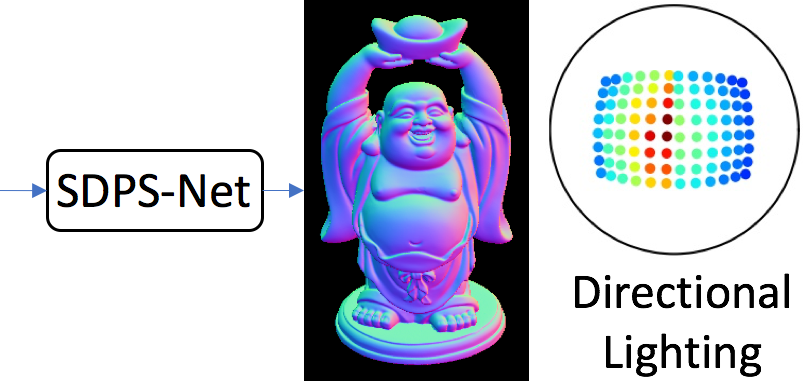
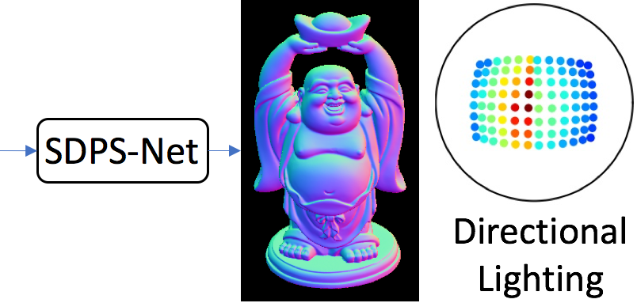
 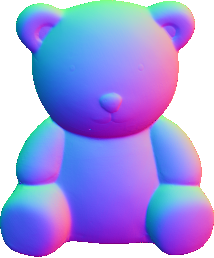
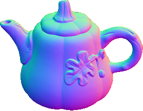
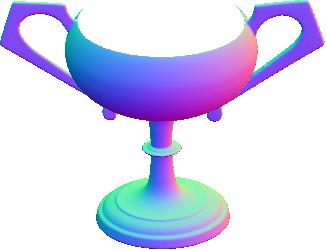
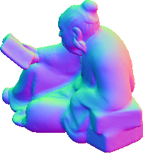
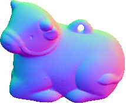
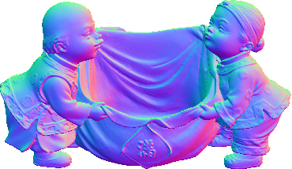
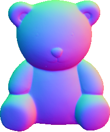
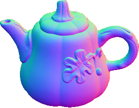
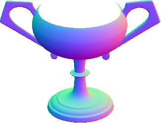
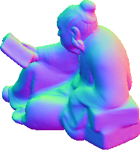
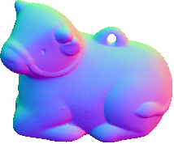
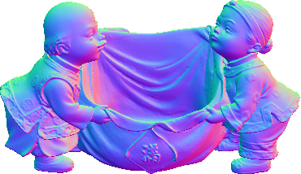